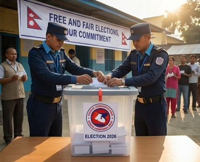
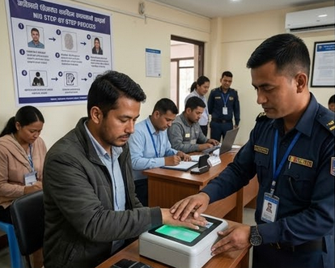

Practical guides, landmark case analysis, and commentary on laws shaping Nepal's legal ecosystem.
Starting a business in Nepal has never been more accessible. With recent digital reforms and streamlined processes, entrepreneurs can now register their companies faster than ever before — here's everything you need to know.
Read Article →Legal research in Nepal is still heavily dependent on manual searches through print volumes, scattered PDFs, and fragmented online resources. Here's the problem Eksana is trying to solve.
Read Article →The legal landscape in Nepal is undergoing rapid change — 121 new laws planned, landmark Supreme Court decisions, and sweeping corporate law reforms. Here's what practitioners need to know.
Read Article →
Nepal's democracy stands on the foundation of free and fair elections, and at the heart of this process sits the Election Commission of Nepal — an independent constitutional body with sweeping authority.
Read Article →
Nepal's National Identity Card has become an essential document for every citizen aged 16 and above. This comprehensive guide walks you through every step — from online pre-enrollment to collecting your card.
Read Article →